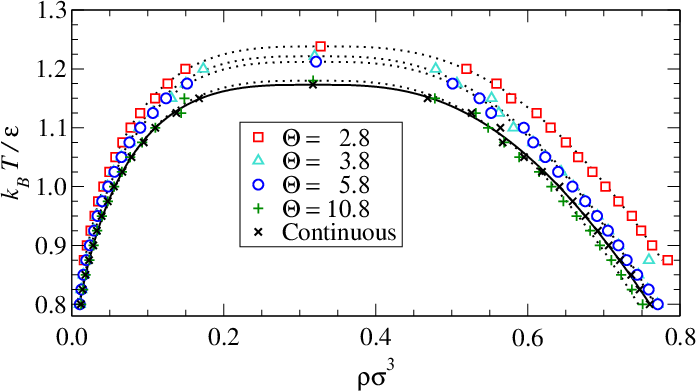

Modern Event-Driven Particle Dynamics
Particle Simulations 2015, Erlangen, Germany
Marcus N. Bannerman
School of Engineering, University of Aberdeen
m.campbellbannerman@abdn.ac.uk
Contents
I distribute an Event-Driven Particle Dynamics (EDPD) package, called
$\mathrm{EDPD} \supset \mathrm{hard\ spheres}$!
It is a general technique for simulating particles which can be compared to the more common Time-Driven (TD) techniques:
Motivation
Why consider another DEM approach?
- Standard DEM is numerically unstable and/or inefficient for realistic values of the stiffness.
- But, ED dynamics is analytic: there is no truncation error. Even infinite stiffness is stable (and efficient).
- ED is really fast, particularly for stiff systems (e.g., hard spheres).
- But what are the limitations of ED particle dynamics? How does it differ from DEM/time-driven approaches?
Event-Driven (ED) versus Time-Driven (TD) dynamics
ED is not just for spheres
(Parallel hard cubes have a visible but continuous "freezing" transition which remains diffusive1.)
(The thin hard rod model has no excluded volume (ideal gas) yet it has complex transport coefficients1.)
ED is not just for repulsive/instantaneous-contact forces.
(Square-well homopolymers are attractive, have multibody contacts, and are used in fundamental bio-polymer models.)
ED is not just for impulsive forces.
The granular damper container itself has a finite mass and is forced by a spring.
- Both ED and TD particle dynamics simulations solve Newton's equation of motion:
- Definitive definition:ED simulations only use models where the integral is piecewise analytic.
- $\Delta t$ is the time a particular analytical solution is valid, and "events" are the transitions between the analytical solutions.
- For completeness, Time-Driven approaches use a regular value of $\Delta t$ and numerical quadrature.
- For example, forward Euler integration:
- But, this looks suprisingly like a ED simulation with a linear trajectory between time steps and update the velocity with an impulse at the end. This asks the question: when are they equivalent? (more later)
- In EDPD, the approximation is explicit in the model, no approximate integration is required.
Event-driven algorithm
Rather than step through time, we calculate the time of "events" exactly (using an approximate model).
This is the automatic adaptive stepping of ED. It jumps to times where significant force/impulse is exchanged.
How are event times calculated?
Assuming no drag (our approximate model), the exact solution to the projectile motion is a parabola:
When it hits the ground at a time we have:
The time of this "event" is a root of the overlap equation, : (note $f<0$ is an overlap, $f=0$ is contact, and $f>0$ is not overlapping)
In this case, this is a simple quadratic with two roots:
Event-detection is driven by root finding.
Generalising for multiple particles
Consider two duelling catapults:
We calculate for all possible events: The earliest event is the next event!
Event processing is driven by sorting.
Event execution
What actually happens at an event?
Consider a two-body event between particle and particle , which has an energy change of .
Conservation of momentum requires:
The impulse, , is a solution to
the conservation of energy balance:
Event execution is driven by root finding for an impulse.
The EDPD algorithm
- Calculate the times of all possible future events, .
- Sort to determine the time of the next event: .
- Move the system up to the time of the next event:
- Calculate the impulses, , for all bodies involved and apply.
- Repeat.
Note, we do not decide the time of the simulation! We decide how many events to run it for and the time is calculated.
Modern EDPD algorithms
Modern EDPD algorithms are quite complex.
- Originally, events were sorted using heaps giving scaling for updates.
- Modern implementations use bounded-calendar priority queues1 for sorting, leading to costs for updates.
- Lazy deletion is also used, where invalid events are deleted only when they are "next".
- As events only involve small, localised particles, the system can run out of sync. i.e., each particle is left at different points in time (this time-warp algorithm requires a neighbour list).
Initially, the simulation is run in synchronous mode, then time-warp is enabled (with the same simulation speed). Only the required updates to the particles are shown.
Precision
Much of what is presented so far is well established,
what is unique about
DynamO?
Stability and
generality.
Even though EDPD is analytic, computers are not exact. Round-off error occurs at the limits of the machine precision.
Although this appears insignificant, catasrophic cancellation can occur and the simulation can fail completely1.
Consider repeated bounces of the projectile: Using a constant coefficient of restitution we have:
The velocity on impact/event decays to zero, and an infinite number of events happens in a finite time.
This "inelastic collapse" is not an instability, but a phenomena of the inelastic hard-sphere model.
Trying to simulate an "inelastic collapse" highlights a catastrophic numerical issue, the particle falls through the floor.
Although should equal after an event, limitations of the precision of the computer leave it at .
As , numerical precision is lost and the argument of the square-root can turn negative!
This gives no real-roots (or events) and the projectile falls through the ground!
This is not just an edge case, this problem is systemic.
It even plauges elastic/molecular systems for certain
sequences of rare ($P=10^{-10}$) events:
Machine precision is not enough to stop particles entering forbidden/invalid states, which may get rapidly worse.
Previous approaches typically attempt to prevent overlaps from forming using small adjustments, but round-off error is inherent and cannot be easily overcome.
Events, by their nature, move a system approaching an invalid state towards a valid state.
An algorithm that always moves towards a valid state is: Events occur at time, $t$, if particles are in contact, $f(t)=0$, or in an invalid state, $f(t)<0$, and this state is deterioriating $\dot{f}(t)<0$.
This appears to be stable in all cases, and correctly simulates inelastic collapse1.
Generality
Applying this stable algorithm requires finding the roots of the overlap function $f(t)$, and its time derivative $\dot{f}(t)$
These functions become increasingly complex. For example, consider spheres in gravity...
In this system the overlap function is a quartic:
In rotating systems, the functions are transcendental, and yet we must reliably determine all roots (to remain stable).
DynamO has a compile-time Computer Algebra System (CAS) library. It allows simple definitions of overlap functions:
Variable<'t'> t;
Vector<> rij, vij, aij;
double diam2_ij;
/*...*/
delta_t = nextroot(pow<2>(rij+t*(vij+aij*t/2))-diam2_ij, t);
The compiler will transform the overlap function to create derivatives, and select different classes of root finding.
The library can find all roots of -order polynomials and certain classes of other functions in a stable way, allowing a wide range of models/events to be detected.
For up to 3rd order polynomials, solution by radicals is used. Solution by radicals is too numerically unstable for 4th order and impossible for 5th order.
For higher order polynomials, roots are bounded using Local Max Quadratic estimates1, then bisected using Sturm's method to avoid repeated transformations of the polynomial.
For transcendental overlap functions, the roots are bounded using a bounding object with a polynomial overlap function. The bounds are then updated using a "worst case" polynomial approximation constructed using Taylor's theorem. This is accelerated using standard numerical root finding techniques.
General forces: Stepped potentials
Stepped Potentials
Can we simulate "real" contact forces using EDPD?
We recently demonstrated elastic forces can be "stepped".
Stepped Potentials
Conversion of a potential first requires the steps to be placed.
Optimal placement was determined to be at fixed changes in the potential energy, $\Delta U$ (analogue of timestep, $\Delta t$!).
Stepped Potentials
Optimal energies are given by equating the second virial contribution, which is a volumetric average at $T\to\infty$:
Stepped Potentials
These stepped approximations can closely reproduce the phase behaviour of the LJ system:
Stepped Potentials
And the dynamics, for example, the shear viscosity:
Stepped Potentials
Molecular forces are too soft and EDPD is inefficient at high density: harder, granular potentials are more efficient.
Event-Driven Spring Dashpot
In the past few months, we have worked on a spring-dashpot force as an example implementation of viscous forces.
Previous work1 in this direction focussed on single-event collision dynamics and required storing "history". It also demonstrated the importance of considering individual particle trajectories.
A pair of colliding particles under with an elastic spring is simulated to test the trajectory.

For a single collision, the key parameter is where it lands on the final step (inset). $\tau = KE_{final}/(U_{final+1}-U_{final})$
There is an issue in the last step: for vanishing remaining energy the particles become stuck! ("elastic collapse"?).

By
enforcing a minimum kinetic energy (immediately bouncing
$\tau<\alpha$, where $\alpha=1/9$ in the last step), the
average collision time is correct.
Published dissipative forces in EDPD have so far been limited to inelastic coefficients.
To implement arbitrary dissipative forces cheaply, it should be approximated using an impulse/energy loss at each step:
Where $\Delta r$ is the width of the step the particle is leaving. No step-change = no energy loss (quasi-static elastic limit/no inelastic collapse).
Even for high inelasticiy ($\gamma$ set such that $e_{exact}=0.4$) this simple approach
is accurate with minor time scattering.
Relatively small numbers of steps are acceptable, with
collision time showing the most scatter.
Maximum distance is rigidly enforced.
And the model demonstrates the required constant
coefficient of restitution for spring-dashpot particles.
Outlook of EDPD
- Complex shapes, forces etc. are easy to implement using the CAS library of DynamO.
- Viscous forces are now available in EDPD (48 years late!).
- Friction forces (Coulomb's law, Cundall and Strack, etc.) should come soon using these ideas.
- With the above improvements in place, new advanced optimisation algorithms for DEM are possible and should be investigated.
"Sleeping particles" algorithm allows free simulation of stationary particles. Possible massive speed-ups in heaps, rolling drums, etc.
Acknowledgements
Thanks go to Liang Xiao, Christopher Thomson, Severin Strobl, Leo Lue, and Thorsten Pöschel.
Thanks to you for your attention.